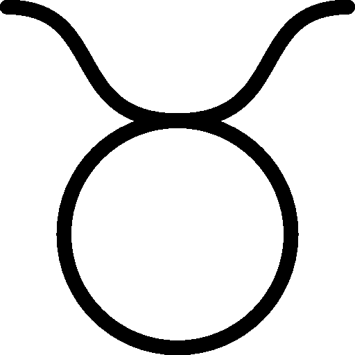
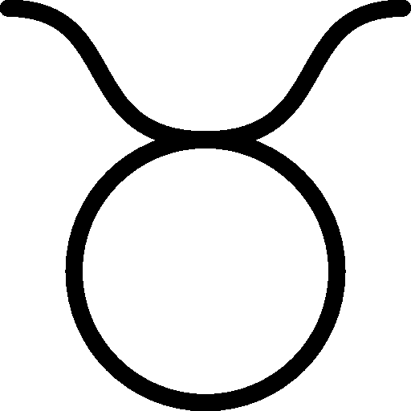

Aquarians are archetypical outcasts. This doesn’t mean they’re loners. In fact, they thrive in large groups—charming you with their peculiar senses of humor, intriguing you with fun facts about the history of disposable straws, or convincing you to join their reading group. The alienation they feel is often self-imposed—a result of their knee-jerk contrarianism, rather than a lack of social intelligence. They try to be weird. They hang grapefruit rinds from the wall and call it art, they pretend to actually like noise music, they saturate their internal monologues with SAT words.
At their core, Aries do what they want and do things their way. They are unafraid of conflict, highly competitive, honest and direct. An Aries is not weighed down by the freedom of choice, and is perhaps the sign that is least conflicted about what they want. They throw themselves at the world eagerly and without fear. It is one of their most commendable qualities, but also what causes them a great deal of pain and grief.
A Cancer’s personality is like wading chest deep in a lake of warm water. It feels sparkling and cool while it’s touching the body, but you know that if you were to dive in, it would feel warm.
Capricorns aren’t consumed by the need for attention, but are not immune to it. They simply don’t indulge in attention-seeking behavior. They don’t want attention for their looks or style or ingenuity. They don’t want to be admired, but they do want to be respected. They don’t want to be the center of attention. Instead it’s like they need to prove their own abilities to themselves.
Geminis are very intelligent and pick up knowledge quickly. They are perceptive, analytical, and often very funny. They have an unreserved and childlike curiosity, always asking new questions.
Leos are bold, warm, and loving. They are also the ultimate showmen. They can dazzle with the theatrical flair of a Broadway star and the charisma of a politician. They are captivating personalities. They have a way with words, and can speak eloquently on just about any topic, no matter how quickly they’ve just been introduced to it.
Libras are difficult to really understand because they seem so contradictory on the surface. They’re simultaneously extroverted and introverted, strategic and spontaneous, focused and intuitive. This variability makes it difficult to pin down their true character. They are an entire constellation of personalities. Libras are different depending on who they're around.
Describing a Pisces’ personality can be difficult because Pisces tend to evade distinction. Their behavior changes significantly based on who they’re around. Pisces are just permeable membranes that pensively let things flow through them. They are cerebral sea sponges. They are boundless. They tend to dilute themselves with larger personalities to avoid having to form coherent identities.
Sagittarius is the ultimate empiricist. They will always choose principles over feelings and will often question who they are. They move from job to job, philosophy to philosophy, belief to belief. They are explorers of the human condition and are unafraid of change. Sagittarians feel like the world is their playground. They love to explore the unknown. They want to understand how the world works.
The Scorpio personality is a profound chasm of infinite complexity (or at least how they project themselves). They are difficult people to get to know. They are psychological trap doors. They socialize from behind a double-sided mirror, always scanning, reading you while you can only see your own reflection. They prefer to be the people asking the questions.
Taureans are the human equivalent of moss. A handmade wooden chair. They are normally satisfied with the way things are. They embody stability. Sitting in a patch of grass admiring the breeze. When everything else seems to be falling apart, Taureans are an oasis of calm, a rock of dependability. Practical knowledge and experience is their modus operandi.
Virgos are known for being perfectionists. Clean freaks. They are known for their attention to detail. They can find patterns where there are none. They can be finicky and critical to a fault.